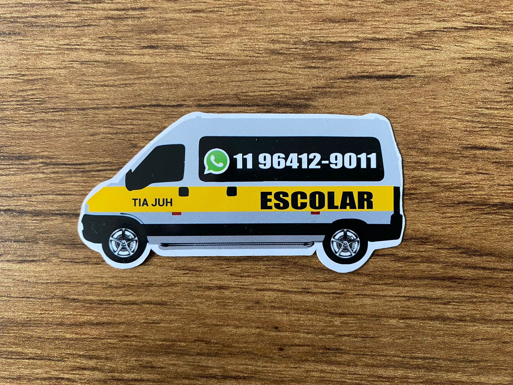

Transporte Escolar com Amor e Segurança!
No meu trabalho com transporte escolar, a prioridade é sempre a segurança e o bem-estar dos alunos. Para isso, mantenho o veículo em perfeito estado de conservação, com manutenções regulares e todos os equipamentos de segurança necessários, como cintos para cada passageiro. Tenho experiência e a habilitação adequada, além de passar por treinamentos que me preparam para qualquer emergência. Também valorizo uma comunicação eficaz com os pais e responsáveis, rotas bem planejadas e um ambiente confortável e acolhedor para que as crianças se sintam seguras e felizes durante o trajeto.
WhatsApp
